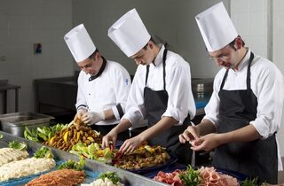

Quienes somos?
Chef de cocina clásica, también conocido como chef tradicional. Estos chefs tienen una formación sólida en técnicas de cocina clásica.
chef de cocina rápida. Los chefs que trabajan en este tipo de restaurantes tienen la habilidad de hacer platillos con rapidez y eficiencia.
El chef creativo. Estos chefs suelen ser vanguardistas y originales en sus creaciones culinarias y buscan constantemente innovar en sus platillos.
Nuestra meta
- Ofrecer una amplia variedad de platillos chinos auténticos que satisfagan los gustos de los clientes.
- Proporcionar un servicio rápido y eficiente para mejorar la experiencia de los comensales.
- Ganar una estrella michelin
Ultimas promociones
Los lunes ofrecemos descuentos en sushi y rollos de verduras, mientras que los martes ponemos a tu disposición una variedad de fideos chinos con deliciosas salsas a precios bajos. .